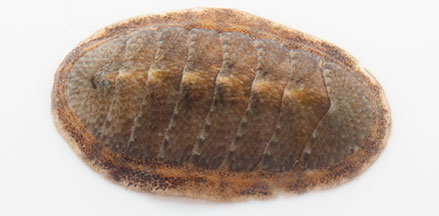
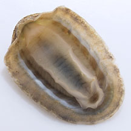
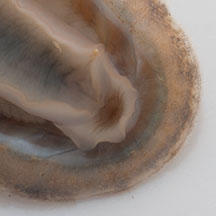
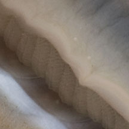
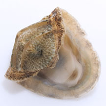
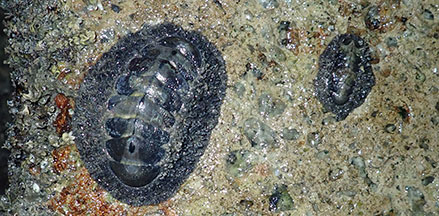

|
|
| molluscs text index | photo index |
| Phylum Mollusca |
| Chitons Class Polyplacophora updated Jun 2020
Where seen? These odd creatures with segmented armour is sometimes seen on many of our shores. On hard surfaces such as rocks as well as large flat clams such as Window pane shell clams (Placuna sp.) and Fan shell clams (Family Pinnidae). Most are tiny and overlooked. But once, Jewelled chitons can be enormous! What are chitons? Chitons are molluscs (Phylum Mollusca) like snails, slugs and clams. They belong to a separate Class Polyplacophora. About half the chiton species are found in shallow waters, while the rest are found in deep water. Features: Ranging from 3mm to 40cm, most are about 3-12cm long. Those on our shores tend to be 3cm or less. These sluggish animals are adapted for clinging tenaciously to a hard surface. A chiton is basically just a large flat foot. The oval flattened body is made up of a thick body with 8 overlapping plates along the centre. 'Polyplacophora' means 'bearer of many plates'. The animal is sometimes also called coat-of-mail mollusc. A thick, stiff mantle covers the body forming a girdle around the plates to the body edges. The girdle may be smooth, or have scales or bristles. |
 Changi, Jan 12 |
 Underside. |
|
 Mouth. |
 Gills on the side of the body. |
 It can curl up. |
| A chiton can create a powerful suction to cling tenaciously onto a
hard surface. According to Ruppert "A chiton forewarned is almost
impossible to remove without damaging the animal". If it is dislodged,
the animal can curl up into a ball. A chiton has no eyes, tentacles and in fact, the head is described as "poorly developed and indistinct". Sometimes mistaken for a scale worm which is a polychaete worm that also has overlapping scales but has well developed tentacles and rows of bristles along the sides of the body. |
 A large and small one found on artificial seawall. Seringat-Kias, Jan 19 |
| What do they eat? Like snails,
chitons have a rough 'tongue' called a radula that is used to rasp
off fine algae or other encrustations. They creep slowly about when
submerged and at night. When exposed at low tide and during the day,
they are usually motionless in some dark, wet hiding place. Status and threats: A large chiton found on our shores, the Jewelled chiton (Acanthopleura gemmata) is listed as 'Endangered' on the Red List of threatened animals of Singapore. |
| Unidentified chitons on Singapore shores |
On wildsingapore
flickr
|
| Other sightings on Singapore shores |
| Class
Polyplacophora recorded for Singapore from Tan Siong Kiat and Henrietta P. M. Woo, 2010 Preliminary Checklist of The Molluscs of Singapore ^from WORMS Order Neoloricata
|
Links
|